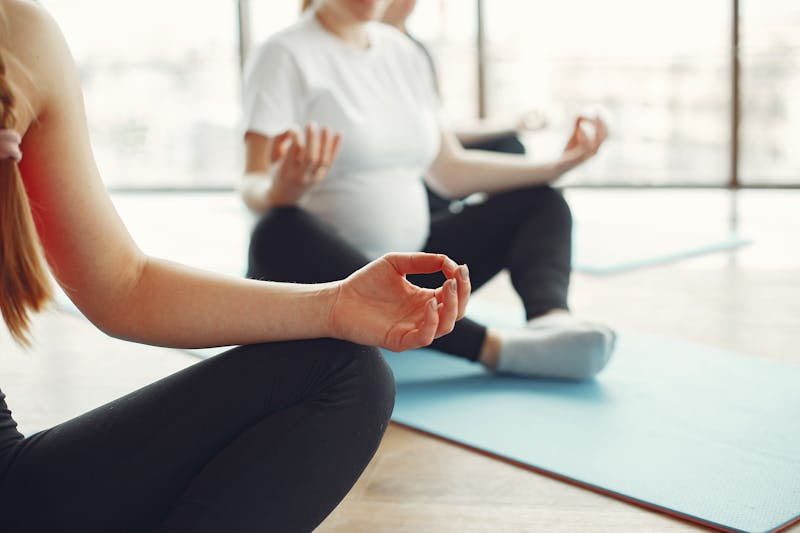

The pelvic floor is one of the most important yet often overlooked muscle groups in the body. This sling of muscles in the "saddle" area of the pelvis supports your internal organs, aids in bladder and bowel control, and plays a vital role in your overall quality of life. Yet the Canadian Continence Foundation estimates that 1 in 3 women suffers from pelvic floor disorders.
The good news? With the right exercises, tools, and guidance, you can significantly improve pelvic floor strength and function. Whether you're dealing with postpartum recovery, age-related changes, or simply want to be proactive about your pelvic health, this guide covers everything you need to get started.
Understanding Your Pelvic Floor
The pelvic floor muscles are attached at the front of the pelvis on the pubic bone and at the back on the tailbone (coccyx), forming a supportive hammock inside your pelvis bowl. A strong pelvic floor provides:
- Organ support - holds the bladder, uterus, and rectum in place
- Bladder and bowel control - prevents leakage and urgency
- Core stability - works with your deep abdominal muscles and back muscles
- Sexual function - enhances sensation and enjoyment
Dysfunction can occur at any age - from childhood bed wetting, to postpartum issues, to peri-menopausal changes. Common symptoms include incontinence, pelvic pain, a feeling of heaviness, and pain during intimacy. If you experience any of these, know that you are not alone and there is absolutely nothing to be anxious about. Help is available.
Essential Pelvic Floor Exercises
1. Kegel Exercises (When Appropriate)
Kegels involve contracting and relaxing the muscles you would use to stop the flow of urine. They can be helpful for people whose pelvic floor is genuinely weak - but they are not right for everyone. If your pelvic floor is overactive or too tense (which is more common than most people realize), Kegels can actually make your symptoms worse. This is why a pelvic floor assessment is so important before starting any exercise program.
Important: Research shows that up to half of women perform Kegels incorrectly after verbal instruction alone, and some use a technique that can worsen incontinence. A pelvic floor physiotherapist can assess whether Kegels are appropriate for you and ensure you are using the correct technique. For a full breakdown of when Kegels help and when they do not, read our detailed guide: Kegel Exercises: When They Help, When They Don't, and What the Research Says.
If Kegels are appropriate for your situation, here is how to do them:
- How to do them: Squeeze and lift the pelvic floor muscles as if you're trying to stop urinating midstream. Hold for 3–5 seconds, then relax fully for 3–5 seconds. Repeat 10 times.
- Sets per day: Aim for 3 sets of 10 repetitions throughout the day.
- Progression: Gradually increase the hold time to 10 seconds as you build strength.
Tip: Make sure you're not holding your breath or tightening your buttocks, thighs, or abdomen. Isolation is key. If you find it difficult to isolate the right muscles, your pelvic floor physiotherapist can help you learn the correct technique.
2. Bridge Exercise
Bridges engage the pelvic floor along with the glutes and core, making them an excellent compound exercise.
- Lie on your back with knees bent and feet flat on the floor, hip-width apart.
- Engage your pelvic floor and squeeze your glutes as you lift your hips toward the ceiling.
- Hold at the top for 3–5 seconds, then slowly lower back down.
- Repeat 10–15 times for 2–3 sets.
A thick exercise mat (at least 1/2-inch) makes floor exercises like bridges much more comfortable, especially on hard surfaces.
3. Deep Squats
Squats naturally engage the pelvic floor and help improve both strength and flexibility in the area.
- Stand with feet slightly wider than hip-width apart.
- Lower down as if sitting into a chair, keeping your weight in your heels.
- Engage your pelvic floor as you press back up to standing.
- Repeat 10–12 times for 2–3 sets.
4. Stability Ball Exercises
Sitting and exercising on a stability ball naturally activates the pelvic floor muscles because your body has to work to stay balanced. Simple bouncing, pelvic tilts, and circles on the ball are excellent for pelvic floor engagement.
- Pelvic tilts: Sit on the ball and gently rock your pelvis forward and backward.
- Circles: Make small circles with your hips while seated on the ball.
- Bouncing: Gently bounce while engaging your pelvic floor muscles.
When choosing a stability ball, look for an anti-burst exercise ball - choose 55cm if you're under 5'4", 65cm for 5'4"–5'10", or 75cm if taller.
5. Diaphragmatic Breathing
Your diaphragm and pelvic floor work together. Proper breathing helps coordinate pelvic floor function and reduce tension.
- Lie on your back or sit comfortably.
- Place one hand on your chest and one on your belly.
- Breathe in slowly through your nose, letting your belly rise (your pelvic floor naturally relaxes as you inhale).
- Exhale slowly through your mouth, gently engaging your pelvic floor as your belly falls.
- Repeat for 10 breaths. Aim for 3 sets of 10 breaths, 3 times per day.
Recovery Tips for Pelvic Floor Health
Postpartum Recovery
After childbirth, the pelvic floor needs time and intentional care to recover. Here are key tips:
- Start with breathing: In the early days after delivery, focus on gentle diaphragmatic breathing to reconnect with your pelvic floor. This helps restore awareness without adding tension to muscles that may already be guarding or overworked.
- Avoid heavy lifting: For the first 6–8 weeks, avoid lifting anything heavier than your baby.
- Support your perineum: Use a cushion for sitting and follow the care instructions your healthcare provider gives you.
- See a pelvic floor physiotherapist: A professional assessment at 6 weeks postpartum is essential. Your physiotherapist will determine whether your pelvic floor needs strengthening, relaxation, or a combination of both - and build a program based on what your body actually needs. Not everyone benefits from the same exercises, and Kegels are not always the right answer.
Managing Incontinence
Bladder leakage during exercise, sneezing, or laughing (stress incontinence) is common but not something you have to live with. Along with pelvic floor exercises:
- Train your bladder: Gradually increase the time between bathroom visits.
- Watch fluid intake: Reduce caffeine and alcohol, which can irritate the bladder.
- Stay consistent: Pelvic floor exercises take 8–12 weeks of consistent practice to show results.
- Don't strain: Avoid bearing down on the toilet. A toilet stool elevates your feet into a natural squat position, reducing straining and making it easier to fully empty.
Daily Habits That Help
- Posture matters: Slouching puts pressure on the pelvic floor. Sit and stand tall with a neutral spine.
- Stay active: Regular walking and low-impact exercise supports pelvic floor health.
- Manage constipation: A high-fibre diet and adequate hydration reduce straining.
- Use a support cushion: If you sit for long periods, an ergonomic seat cushion with a coccyx cutout can reduce pressure on the pelvic area and tailbone.
When to See a Pelvic Floor Physiotherapist
While exercises and tools are valuable, they work best when guided by a professional assessment. Consider seeing a pelvic floor physiotherapist if you experience:
- Urinary or fecal incontinence
- Pelvic pain or pressure
- Pain during intimacy
- A feeling of heaviness or "falling out" sensation
- Difficulty emptying your bladder or bowels
- Prenatal or postpartum pelvic concerns
- Low back, sacroiliac joint, or tailbone pain
A pelvic floor physiotherapist can perform an individualized assessment and develop a rehabilitation program tailored specifically to your needs. These programs are far less invasive than surgical or pharmaceutical treatments, and with minimal lifestyle changes coupled with carefully designed exercises, you can see massive improvements.
Helpful Tools Mentioned in This Guide
Here are the products referenced throughout this article. These are tools that can complement your exercises and recovery at home:
- Thick Exercise Mat - comfortable cushioning for floor exercises
- Anti-Burst Stability Ball - for pelvic tilts, bouncing, and core work
- Toilet Stool - promotes natural positioning to reduce straining
- Ergonomic Seat Cushion - relieves pelvic and tailbone pressure during prolonged sitting
- Fabric Resistance Bands - adds challenge to bridges, squats, and clamshells
- Foam Roller - releases tension in hips, glutes, and inner thighs
Disclosure: As an Amazon Associate, I earn a small commission from qualifying purchases made through the links above. As a healthcare professional, I am not endorsing or promoting these specific products. The items mentioned are general suggestions based on what may be helpful for the topics discussed in this article. Readers should do their own research and due diligence before purchasing any product. You are free to find and purchase similar products from any supplier of your choice - this will not affect your access to the content on this site or any physiotherapy services.
Ready to Take the Next Step?
Jumana Khambatwala is a Registered Physiotherapist certified in Pelvic Floor Physiotherapy, practicing in Ottawa and Limoges, ON. Book a consultation to get a personalized assessment and treatment plan.
Book a Pelvic Floor Assessment